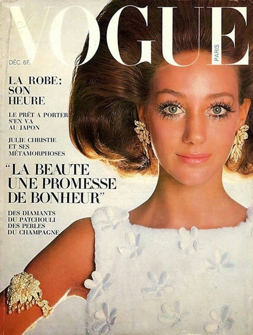
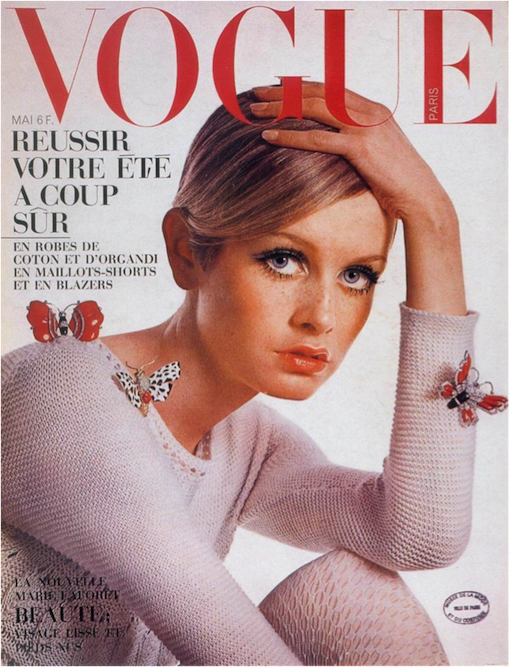
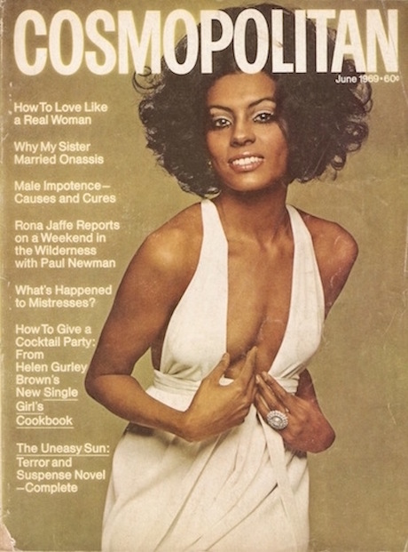
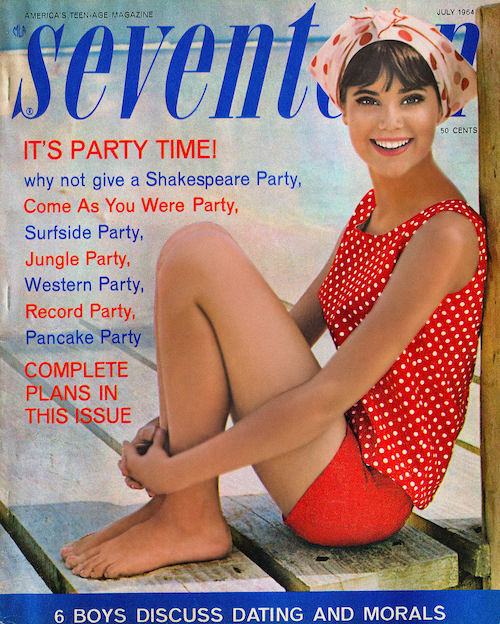
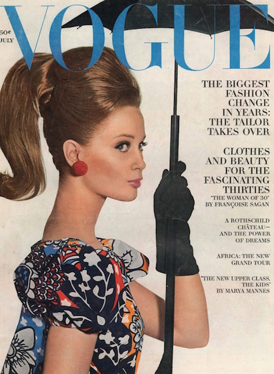
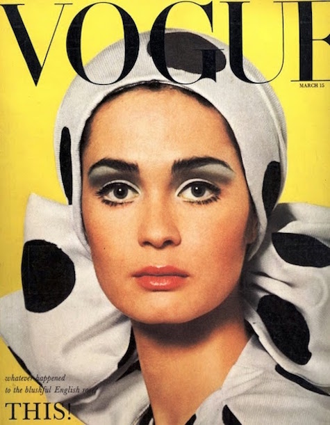

1960
1960 The Age of Counterculture
The 1960s was defined by the rise of counterculture movements that revolutionized social norms across the country. Youth culture during the 1960s rejected the emphasis on conformity that the preceding decade ingrained in society. Replacing distinct separations between the styles of clothing worn by men and women, the 1960s introduced a new phenomena: unisex clothing.






HOME